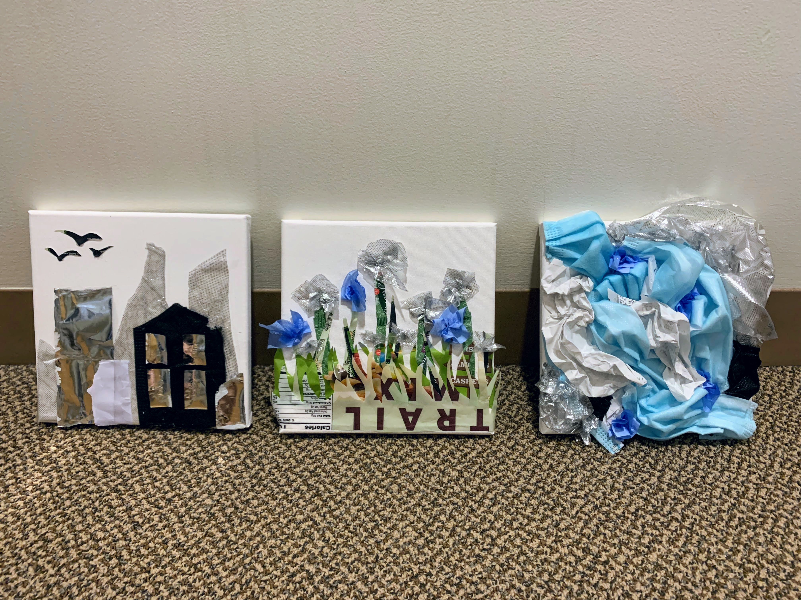
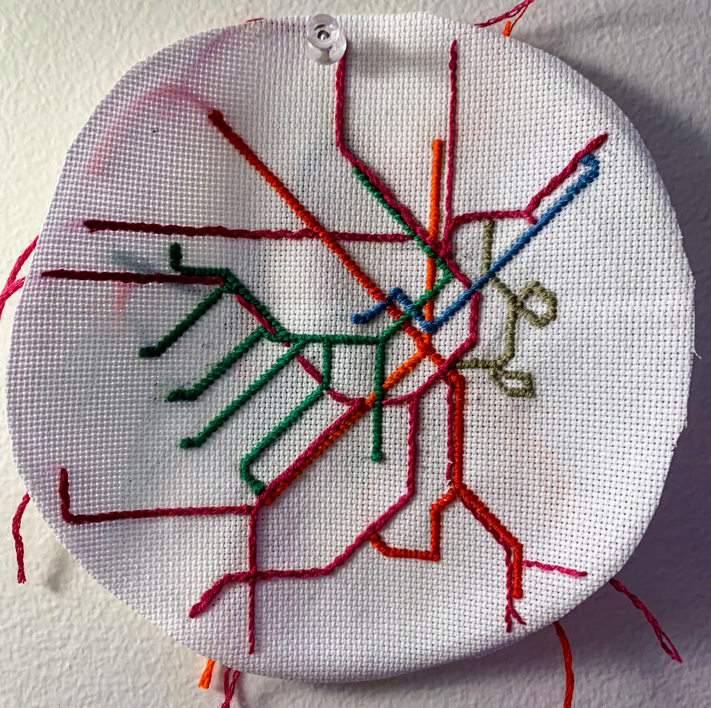
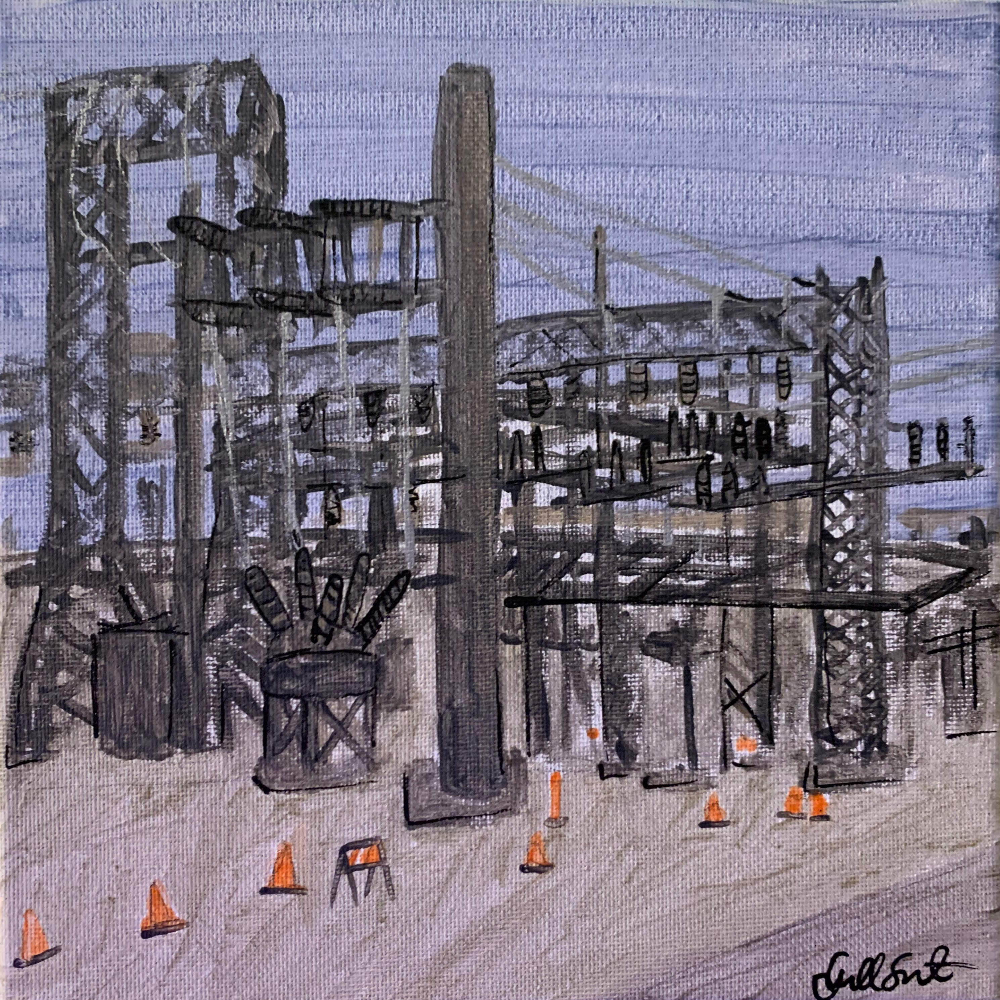
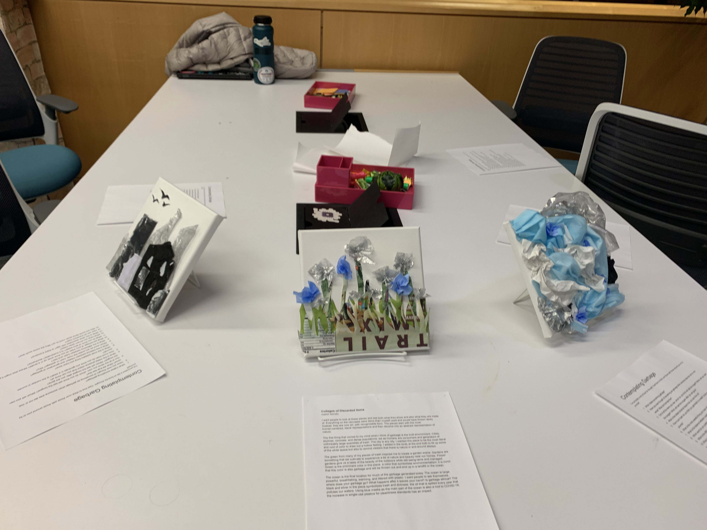

Infrastructure and Art
During the fall of my junior year, I completed an independent study with professor
Week One: Infrastructure Sketches
A series of sketches from around campus.
Week Two: Fire Alarm Enunciator Plaque
A plaque similar to those you would see at an art museum, for a panel critical to the fire safety of campus. The text of the panel can be seen below.
EST3 Remote Annunciator
Edward Systems Technology (2016)
Mixed media
This work is a thoughtful piece that is designed to protect our community from the dangers of a fire. The annunciator panels are a window into the inner workings of our campus, acting as a remote monitor for the main fire alarm panels located within electrical rooms. There are six total annunciator panels that can be found on campus, all connected to every element in our fire alarm system via fiber optic cable. Should there ever be a fault, these panels inform their observers with specifics on the issue—whether it is simply a warning, a trouble in the system, or a full-on fire alarm, as well as which detector or alarm is reporting the fault.
Our system needs to perform at its peak year-round, and as such regular maintenance is performed. Every piece of equipment must be tested yearly and confirmed to be functional to ensure the safety of everyone on campus should there be an emergency.
Week Three: Collages of Discarded Items
For this piece, I wrote an artist's statement.
 Colleges of Discarded Items
Isabel Serrato
I want people to look at these pieces and see both what they show and also what they are made of. Everything on the canvases were items that I myself used and would have thrown away. Instead, they are now art, with recognizable form. The pieces start with the most human-centered, literal representations and then devolve into an abstract representation of nature.
The first thing that comes to my mind when I think of garbage is the built environment. Cities, skylines, concrete, and dense populations; we as humans are consumers and generators of unthinkably large quantities of trash. The city is any city. I wanted this piece to be the most literal and void of color to draw out a hollow feeling. I added in the birds at the end both to fill up some of the white space but also to remind viewers that there is nature in and around always.
The green from many of my pieces of trash inspired me to create a garden scene. Gardens are something that we cultivate to experience a bit of nature and beauty near our homes. Flower gardens give us a taste of the beauty of the outdoors while still being tame and managed. Green is the prominent color in this piece, a color that symbolizes environmentalism; it is ironic that this color is also garbage and will be thrown out and end up in a landfill or the ocean.
The ocean is the final location for much of the garbage generated today. The ocean is large, powerful, breathtaking, warming, and littered with plastic. I want people to ask themselves, where does your garbage go? What happens after it leaves your hand? Is garbage ethical? The black and silver in the piece symbolizes trash and dirtiness, the oil that is spilled every year that pollutes our waters. Using blue masks as the main part of the ocean is also a nod to COVID-19; the increase in single-use plastics for cleanliness standards has an impact.
Week Four: Scenes from Campus
This series is meant to represent the way that infrastructure is all around us, but can go by unnoticed. At first glance each of the photos appear normal; at second glance, something is slightly off; and upon further inspection you can see where a piece of infrastructure was painted over.
Week Five: Embroidered T Lines
The T is the public transit system in Boston. This map shows not the geographic location of the lines, but the condensed version that is shown on the Massachussetts Bay Transportation Authority's (MBTA) website. I chose this medium because I was travelling this week and wanted a portable project that could be done on an airplane.
Week Six: Painting a Substation
The substation in this painting was painted from a reference image, as the weather was suboptimal this week.
Week Seven: Performance Piece
For this week, I took apart the trash collages I had made in Week 3 as a performance piece. I held my event at a club called Stay Late and Create (SLAC), and asked those who came to ruminate over and discuss a series of questions.
Contemplating Garbage
I’ve provided a list of food for thought. Feel free to think over these with those around you or by yourself.
- What makes something garbage?
- Have you ever thought of something as garbage when someone else did not or vice versa? What did that feel like?
- Out of all the items you own, which do you think will last the longest? Which will you own the longest? Which will last the longest after you are gone?
- What is the oldest physical object that you can think of?
- How much trash do you think you generate in a week? Is the number in ounces, pounds?
- What is the most wasteful thing you have done?
- What is the balance between creation and generation of garbage?
- Which word do you prefer the most: trash or garbage? Why?
- What is the difference between trash and litter?
- What percentage of your trash do you think ends up in a landfill? Where else might it go?
- What do you think of zero-waste? Is it sustainable? Worthwhile?
- What have you thrown away today?
- What is the value associated with age? Is there a timeline?
- How can art transform trash?
- Why are some items worth more to us? Why are some worth less?
Week Eight: Infrastructure Personality Quiz
This quiz is a fun way to get excited about relating to different pieces of infrastructre. After answering a series of questions, you're told which type of infrastructure you are most similar to! Below are the five options that a person might receive.
Electrical Grid: Shocking, right? You’re the power grid! You are usually super reliable and have lots of support systems working to keep you going. However, when something bad happens, whether that’s a math test or one too many trees hitting a wire, you can go down hard and be out for a while. While you can come off as boring, you have an electric personality that comes out among close friends. You’re going through a lot of development right now and are in a pretty transformative period of your life!
Water Supply: You go with the flow! You’re our water supply! Always around when your friends need you, and you’re very accommodating to their schedules. You’re always on tap and mindful of what people need, constantly checking in on your friends to make sure everything is alright and the water they get is potable. You operate well under pressure, and can deliver results at work.
Sewer: You’re our sewer system! You tend to give off bad impressions because of how straight-to-the-point you are, but people respect you for your hard-working nature and ability to hold your nose and just do it. You’re very good at managing large, high-stakes projects that require a lot of inputs, outputs, treatment, and testing, and operating with severe constraints. There’s a lot more to you than people know, if only they went under the surface they’d see you’re actually a very caring person who’s just passionate about what they do.
Telecommunications: You're a telecommunications network! You have big goals to improve the human race, and are working hard to see those happen.Your network is large and often called upon, you’re always making connections both at and outside of work. You are great at getting your points across quickly and efficiently, making you a great conversationalist and fabulous at presentations, but your working style and lifestyle is utterly confounding. You have a lot of protocols you follow, and while people don’t understand how you operate they appreciate the services you provide.
Roads: Hi(way)! You’re our road system! While you’re a hard worker, you have a lot going on. Your projects are a little all over the place, and they’re all calling your attention at once so things are a little slow to get done. You are good at documentation, and also letting your friends and others know how to interact with you (sometimes with obvious signage) so they don’t have any trouble. You can always see multiple paths to solving a problem, and when friends come to you for advice you can point them in multiple directions knowing they’ll still make it to the right destination.
Final Project: Infrastructure Soundscape
I created a whimsical soundscape that members of the Olin community can walk through and experience that draws attention to everyday infrastructure. I invited the community at our end-of-semester celebration to come inside and listen to the everyday noises and physical representations of those sounds. The individual pieces of audio were sourced from BBC’s Sound Effects Archive and mixed by using Audacity. The audio used for this project is available at this link.
A special thanks to those who let me borrow their laptops, desk lamps, and speakers for this project.